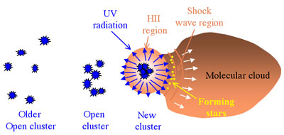

HII regions are emission nebulae created when young, massive stars ionise nearby gas clouds with high-energy UV radiation. They are composed primarily of hydrogen, hence the name (astronomers use the term HII to refer to ionised hydrogen, HI for neutral hydrogen), and have temperatures of around 10,000 Kelvin. They can extend over several hundred light years or be so compact that they do not even stretch 1 light year across. Correspondingly they have a large range of densities, from a few atoms/cm3, to millions of atoms/cm3 for the most compact regions.
In our Galaxy, HII regions follow a distribution pattern similar to that of the molecular clouds from which stars are formed, and are similarly concentrated in the spiral arms of other galaxies. They are also found in association with newly formed stars throughout irregular galaxies making them highly visible tracers of active star formation.
The average lifespans of HII regions are only a few million years, during which time they play a key role in the propagation of star formation through molecular clouds . The winds and UV radiation emitted by the massive stars not only irradiate the gas in the HII region, but also work to carve out a cavity in the surrounding molecular cloud. The hot, ionised gas of the HII region expands into this cavity travelling faster than the speed of sound. Where the supersonic gas from the HII region encounters the subsonic gas in the molecular cloud, a shock wave is formed. This shock wave compresses the gas in the molecular cloud, setting off an intense period of star formation which results in the formation of a loosely bound cluster of stars. Some of these stars will grow to be massive and, in a domino-like effect, will expand the HII region once again.
Although HII regions may produce thousands of stars in this manner, the star formation process itself is highly inefficient. Generally, less than 10% of the available gas is converted into stars, with the remainder of the gas dispersed by stellar winds, radiation pressure and possibly supernova explosions. Left behind, trailing the shock front, are open clusters such as the Pleiades, whose stars will slowly disperse as the cluster orbits the galactic centre.
Perhaps the most famous example of a HII region is the Orion Nebula, where the very luminous stars of the Trapezium cluster are ionising the surrounding hydrogen cloud.